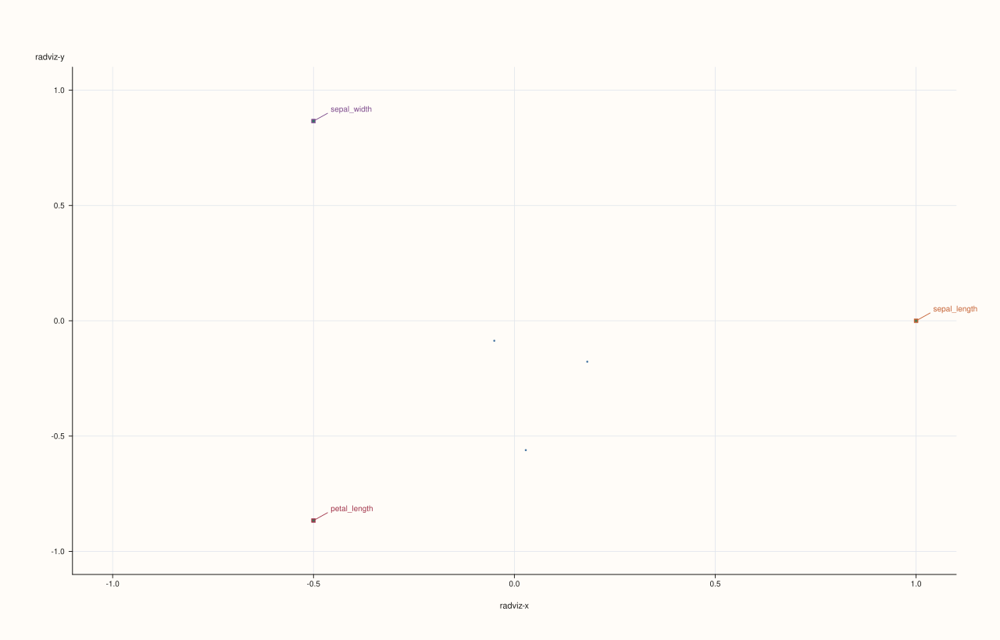
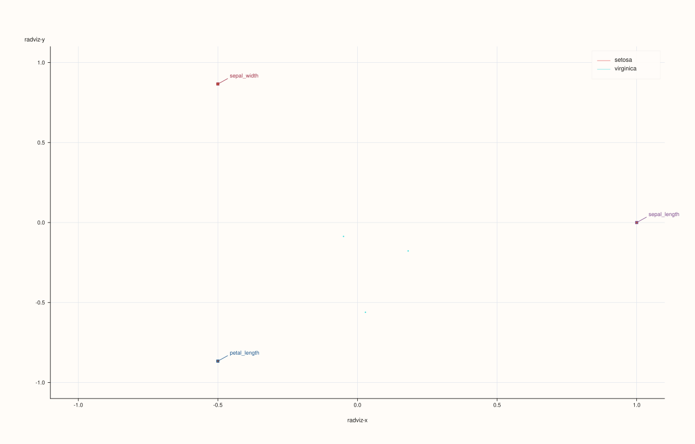
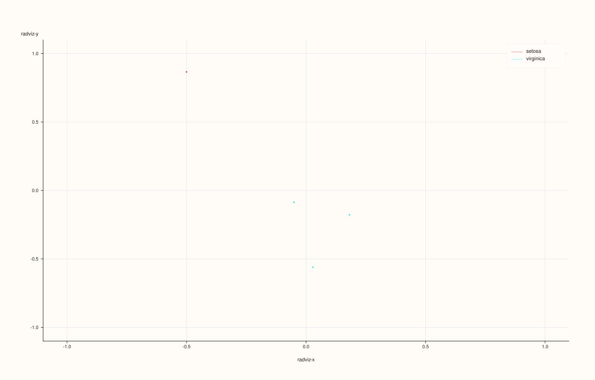
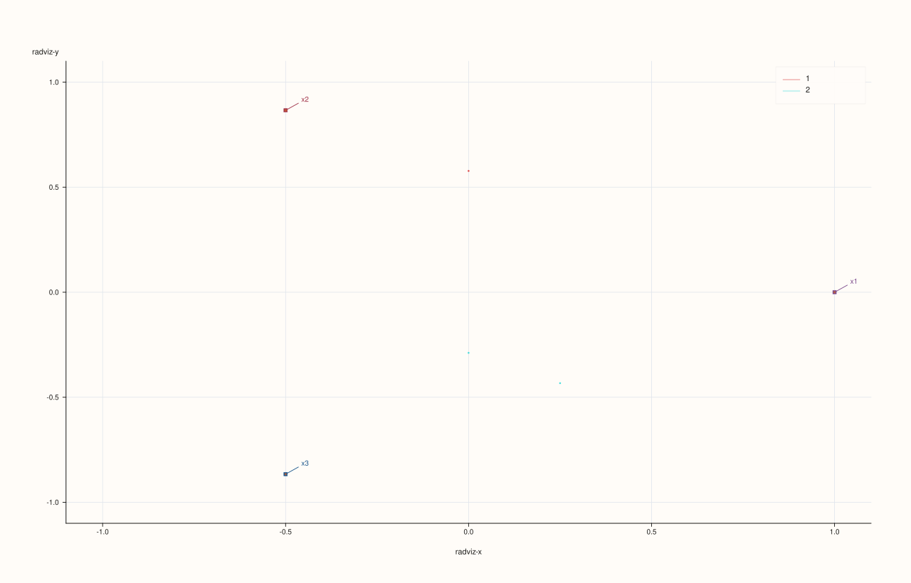

DataFramePlotAccessor::radviz¶
Back to DataFramePlotAccessor API Reference
Signature¶
DataFramePlotAccessor::radviz(
pluss::msharp::RangeView::Of<std::string_view> features = {},
std::optional<std::string_view> class_feature = std::nullopt,
const RadvizPlotOptions& options = {}) const -> pluss::pl::Studio
What It Does¶
Draws a RadViz (radial visualization): one anchor point per selected numeric feature is
placed evenly around the circumference of a circle, and each row is placed inside the circle
at the position where it would come to rest if pulled toward every anchor by a spring whose
strength is proportional to that row’s (normalized) value for that feature. Rows dominated
by one feature are pulled close to that feature’s anchor; rows balanced across several
features settle nearer the center. This is a third way (alongside parallel()
and andrews_curves()) to eyeball multivariate structure across more
than two features at once.
Shares its feature-selection rule (empty features infers every numeric feature),
class_feature behavior (accepts any feature kind, cast to text), and NaN-vs-drop handling
with parallel() — see that page for the full explanation; this page only
covers what’s specific to radviz().
Parameters¶
features (RangeView<std::string_view>, default {})
Numeric features that become anchor points, in the given order around the circle. Empty
infers every numeric feature — see box()’s important callout for the exact
rule.
class_feature (std::optional<std::string_view>, default std::nullopt)
Optional coloring/grouping feature, same behavior as parallel()’s.
options (RadvizPlotOptions)
cpp struct RadvizPlotOptions { std::vector<std::string> labels{}; bool normalize{true}; std::int64_t max_points{3000}; double marker_area{18.0}; float trace_width{0.55F}; bool show_grid{true}; bool show_anchors{true}; bool show_legend{true}; };
labels, normalize, max_points, show_grid, show_legend mirror
ParallelPlotOptions’s fields of the same name (max_points here caps
how many rows are plotted as points, analogous to andrews_curves()’s max_curves
capping curves). marker_area sizes each row’s point marker; trace_width here controls
marker outline width rather than a line’s stroke width, since radviz plots points rather
than lines. show_anchors toggles whether the per-feature anchor points and labels are
drawn around the circle’s rim — turning it off leaves only the plotted rows and the
circle outline.
Returns¶
pluss::pl::Studio
A figure with one pane containing one point per row (or capped at max_points), anchor
points around the circle’s rim (when show_anchors is true), colored by class when
class_feature is given.
Examples¶
Example 1. No explicit features, no class: every numeric feature in the frame becomes an anchor.
using namespace pluss::table;
auto flowers = DataFrame({
{"sepal_length", Thread(pluss::make_series({5.1, 6.7, 5.8, 6.3}))},
{"sepal_width", Thread(pluss::make_series({3.5, 3.0, 2.7, 3.3}))},
{"petal_length", Thread(pluss::make_series({1.4, 5.2, 5.1, 6.0}))},
{"species", Thread(pluss::make_note({"setosa", "virginica", "virginica", "virginica"}))},
});
auto chart = flowers.plot().radviz();
chart.show();
Three anchors (sepal_length, sepal_width, petal_length) placed 120° apart; species is
excluded from the anchors since it’s Note-kind, not numeric.

Example 2. An explicit feature subset, colored by class.
auto chart = flowers.plot().radviz(
{"sepal_length", "sepal_width", "petal_length"}, "species");
chart.show();

Example 3. An explicit RadvizPlotOptions, hiding the anchor labels and enlarging the
markers.
RadvizPlotOptions options;
options.show_anchors = false;
options.marker_area = 32.0;
auto chart = flowers.plot().radviz(
{"sepal_length", "sepal_width", "petal_length"}, "species", options);
chart.show();

Example 4. class_feature accepts a numeric feature too, exactly like
parallel()’s Example 4.
auto numeric_class = DataFrame({
{"x1", Thread(pluss::make_series({1.0, 2.0, 3.0, 4.0}))},
{"x2", Thread(pluss::make_series({4.0, 3.0, 2.0, 1.0}))},
{"x3", Thread(pluss::make_series({2.0, 2.0, 3.0, 3.0}))},
{"code", Thread(pluss::make_series({1.0, 1.0, 2.0, 2.0}))},
});
auto chart = numeric_class.plot().radviz({"x1", "x2", "x3"}, "code");

Notes¶
Shares its feature-selection, class-coloring, and NaN-handling rules with
parallel()— see that page for the full explanation.Needs at least three anchors to be visually meaningful (two anchors collapse the circle to a line), though the underlying feature-selection rule itself doesn’t special-case fewer.
show_anchorstoggles the rim labels/points, independent of whether rows are plotted.Returns a
pluss::pl::Studio— seeline()’s important callout for how to view or save the result.
See Also¶
DataFramePlotAccessor::parallel: the canonical explanation of the feature-selection and class-coloring rules shared by this family of methods.DataFramePlotAccessor::andrews_curves: another multivariate view in the same family.